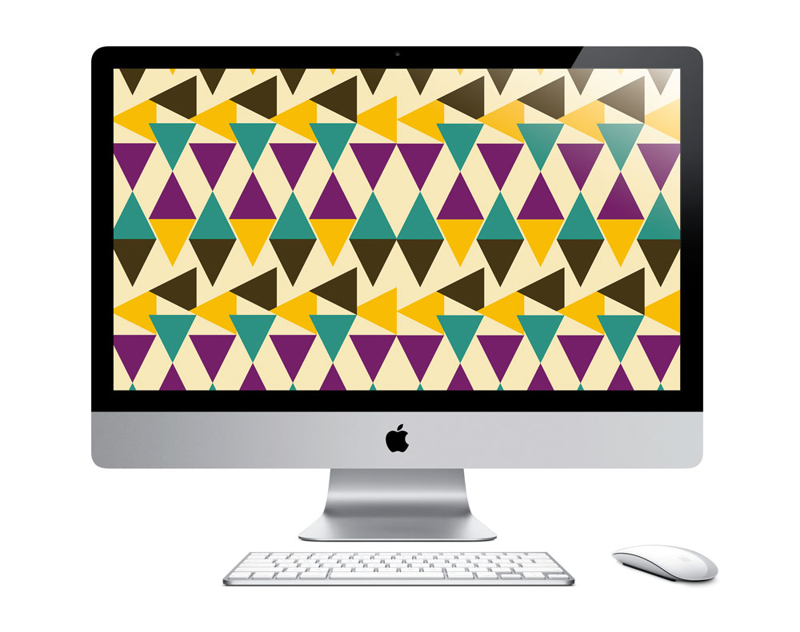

---
layout: page
title: Drawing in the Browser
author: Kelly Walters
description: Patterns and Shapes
category: project
printready: true
caption: "Using the web browser as a blank canvas, I explored the concept of creating illustrations using div boxes and adjusting the numerical increments. My earlier sketches show the process of illustrating a fly swatter and ticket stubs. As I formed more complex compositions, I started to design more intricate repeated patterns. With this collection of patterns, I began to consider where and how these could be applied to different surfaces. The final output for these HTML prints included digital computer wallpapers and printed wrapping paper."
---
